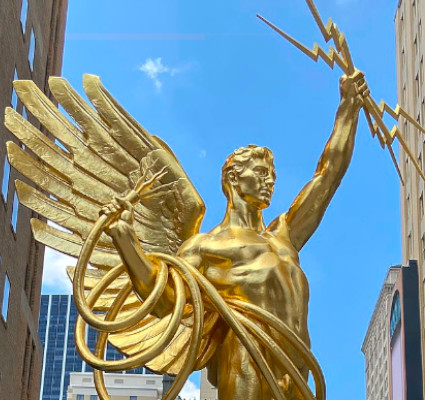

|
BRANDY
NGUYEN
|

|
|
|

|
|
|
Color Gold > My Second Favorite Color |
|

Gold is recognized across cultures as a measure of wealth and prosperity. It has as much meaning as it has material wealth. In ancient Egyptian culture, gold was considered to be divine and so much of their relics were made of it. In western culture, the golden color is associated with decadence and greed. It should not be surprising to know that gold is a warm color. It brightens the world with its metallic splendor. Gold motivates folks to strive for success and accomplishments. The Olympics often use the color to reward the top winners. It represents prestige and nobility that stands out among the bland crowd. VIEW SOURCES |
Sources:
-
Olesen, Jacob. "Gold Color Meaning: The Color Gold Symbolizes Wealth and Success."
Color Meanings, Color Meanings,
5 Dec. 2022, https://www.color‐meanings.com/gold‐color‐meaning‐the‐color‐gold/ . - Rhys, Dani. "Symbolism of the Color Gold." Symbol Sage, 21 Oct. 2020, https://symbolsage.com/color‐gold‐symbolism/.
-
"Spirit of Communication" Spirit of Communication ‐ Wikipedia, Wikipedia, 4 Dec. 2022,
https://en.wikipedia.org/wiki/Spirit_of_Communication. Accessed 8 Feb. 2023.
| PREV PAGE |
Site Links |
NEXT PAGE |
|
Brandy Nguyen
bnguyen11@neiu.edu CS300 Spring 2023 |
||